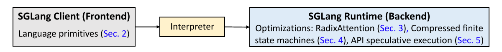
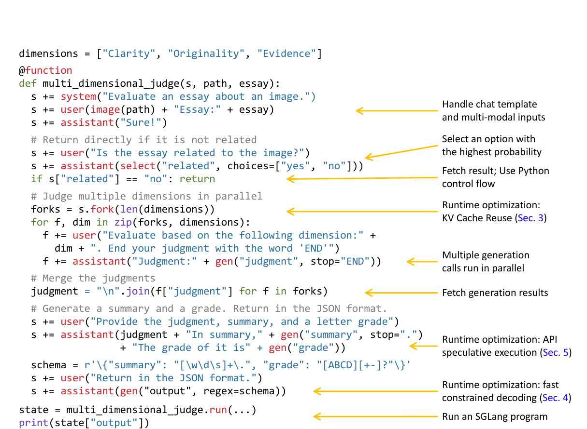
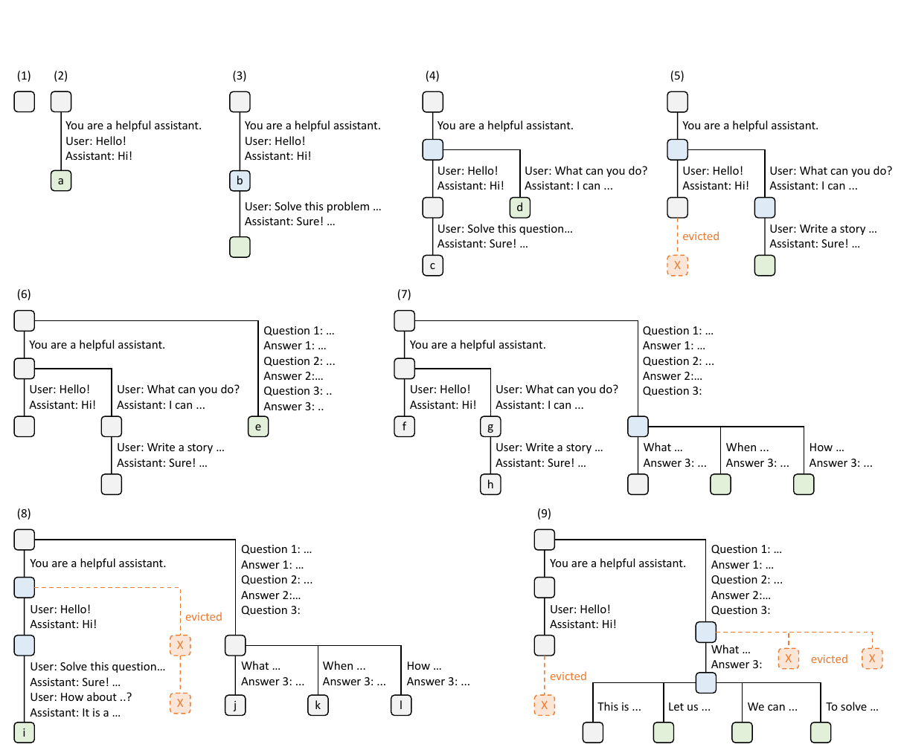
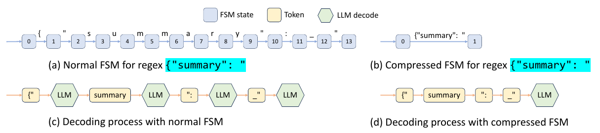
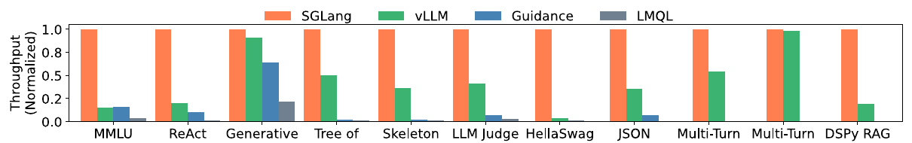
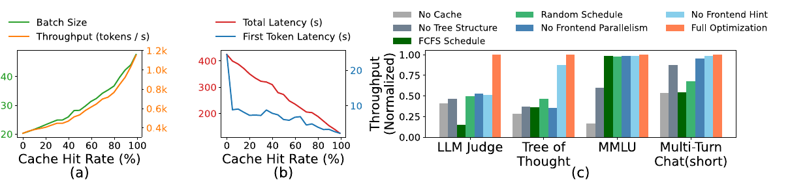

本文精读 Zheng 等人在 NeurIPS 2024 发表的 SGLang 论文，解释前端程序与推理运行时如何配合，以及 RadixAttention、压缩有限状态机和 API 推测执行分别节省了什么。读者需要先了解大语言模型按 token 自回归生成；KV 缓存、前缀匹配和约束解码等概念。论文原文
主要工作
语言模型程序（LM program）用控制流组织多次模型调用，并处理结构化输入或输出。SGLang 为这类程序提供两个协作部分：嵌入 Python 的前端语言负责表示提示、生成、选择和并行分支；运行时负责执行模型请求，并利用调用之间的共享结构减少重复工作。 论文的主要贡献大概有三项： 1.RadixAttention：实现跨请求保留KV cache，采用树状多级前缀共享、LRU 驱逐与感知前缀等方案；
2.压缩有限状态机与确定文本
3.API 推测执行的调用合并


图 1 的箭头表示职责边界：前端记录“当前提示是什么、下一步应生成或选择什么”，解释器按程序控制流提交操作；运行时接收可执行的请求。
对于本地运行的开放权重模型，RadixAttention 将共享前缀的键值缓存（KV cache）跨调用保留下来，压缩有限状态机（FSM）跳过结构化输出中已被语法确定的连续文本。对于只能通过黑盒 API 访问的模型，API 推测执行尝试把相邻生成合并进一次端点调用。论文在其测试配置与基线下报告，开放权重模型工作负载的最大吞吐量最高提高 6.4 倍、单程序平均延迟最多降低 3.7 倍。论文，摘要、§6.2
研究背景
单次聊天请求可以直接调用推理引擎。而多步推理、智能体和结构化输出程序则常先生成中间结果，再依据结果决定后续提示或并行分支。例如先判断文章是否与图片相关，再并行生成不同维度的评价，最后汇总成 JSON。此时，程序员既要维护提示状态和变量，又要安排生成、等待和输出解析。论文以这一类多调用工作流为目标；SGLang 的前端原语减少手写字符串处理和并行控制。论文，§1–2、图 2
运行时的问题来自自回归推理。模型先对输入提示执行 prefill，为提示中的各个 token 计算各层注意力所需的键和值；之后的 decode 阶段每生成一个 token，都利用这些历史键和值计算对前文的注意力。保存历史键和值的显存区域称为 KV 缓存。设提示为 token 序列 ：在因果注意力下，位置 的 KV 由到 为止的前缀决定。两个请求若使用相同模型及相关执行配置，且前 个 token 完全相同，就有机会共享前 个位置的 KV；从第 个不同 token 开始仍需继续计算。论文，§3、附录 A.1
这里的“共享前缀”指两个请求从第一个 token 开始，连续若干个 token 完全相同。用数字代替 token ID 举例：请求 A 是 [11, 20, 30, 41]，请求 B 是 [11, 20, 30, 57]。两者可以复用前 3 个 token 的 KV；从第 4 个 token 起，输入不同，后续 KV 要分别计算。这些数字只是说明匹配规则的示意，不是论文实验中的真实 token。论文，§3、附录 A.1
在实际程序中，前 3 个 token 可以对应两条请求共同的系统提示，后面的 token 对应不同问题；多轮会话、相同少样本示例和提示分叉也会产生这样的公共起始序列。缓存比较的是模型实际接收的 token 序列：两句话即使意思相近，只要 token 不同，就不能直接共享 KV；同一个词换到提示的另一位置时，它前面的 token 变了，该位置的 KV 也会随之变化。论文，§3、附录 A.1
问题定义
给定一个语言模型程序，系统既要执行程序规定的生成、选择和控制流，也要在多个调用及程序实例之间复用计算。这里的程序实例是同一程序针对一份输入执行一次；一次实例内部也可能发出多个模型请求。对开放权重模型，运行时能控制 KV 缓存与模型前向传播；对仅提供 API 的模型，运行时只能控制调用方式、提示和返回结果的使用。因此论文采用三种机制处理三个不同的重复成本：共享前缀重复 prefill、被语法确定的文本重复解码，以及相邻 API 调用重复发送上下文。论文，§2–5
第二种成本出现在有格式约束的输出中。例如 JSON 语法已确定接下来只能输出固定键名和标点时，逐 token 调用模型决定这些字符会增加解码步骤。它与共享前缀的重复 prefill 是两种不同的浪费：前者发生在生成已确定的后续内容时，后者发生在重新处理已出现的相同输入时。压缩 FSM 和 RadixAttention 分别处理这两种情况。论文，§3–4
这三项优化的输入条件不同。RadixAttention 要求运行时能够持有模型的 KV 缓存，并且有可复用的相同 token 前缀；压缩 FSM 要求生成过程由正则表达式约束，且某些状态之后只有唯一合法延续；API 推测执行针对只能通过端点调用的模型，并且连续的生成步骤能够被提前生成的文本匹配。一个程序可以同时包含多种机会，例如图 2 的并行评价分支共享提示前缀，最后的 JSON 生成具有格式约束。论文，图 2、§3–5
方法原理
前端原语与异步执行
SGLang 把提示状态放在变量 s 中。s += ... 追加文本或消息；gen("name") 调用模型并把结果存为具名变量；select 从候选中选概率最高的一项；fork 复制当前提示形成并行分支。gen 的 regex 参数给生成结果施加正则表达式约束。它们嵌入 Python，因此程序仍可使用 if、循环和普通函数。论文，§2、图 2


图 2 可沿执行顺序读成四段。第一段用 system、user 和 assistant 组成提示，并把图片和作文传给模型。第二段通过 select("related", choices=["yes", "no"]) 在两个候选中选概率较高的一项；随后读取 s["related"]，Python 的 if 才能决定是否提前返回。第三段用 s.fork(len(dimensions)) 从当前提示创建三个分支，每个分支追加不同的评价维度并执行 gen("judgment")，最后读取各分支的 judgment 并用 Python 的 join 合并文本。第四段先生成摘要和等级，再用 gen("output", regex=schema) 生成满足格式约束的 JSON。这里的 fork 是 SGLang 的提示分叉，"\n".join(...) 是 Python 字符串合并，两者操作的对象不同。论文，§2、图 2
select 的结果会影响 Python 分支，程序必须在读取 s["related"] 时等待该结果；三个 gen("judgment") 则在读取结果以前没有相互依赖，可以并行提交。前端由此把必要的同步点和可以重叠的生成调用表达给运行时。三个评价分支还继承同一段原始提示，构成 RadixAttention 可复用的公共前缀；最后的 regex 则把 JSON 的合法输出路径交给压缩 FSM。这正是图 1 中前端信息进入后端优化的具体过程。论文，§2–4、图 2
论文默认采用解释执行：前端把追加、生成和选择提交到提示对应的异步流；Python 代码可继续提交后续操作，读取尚未完成的生成变量时才等待。每个提示流由后台执行器管理，分支的多个流因此可以同时推进。论文也提到把程序编译为计算图的执行方式，但其主要实验默认使用解释模式。前端执行器在 fork 时还会先发送公共前缀作为提示，再发送分支剩余内容，以帮助运行时正确插入基数树并匹配缓存。论文，§2–3、附录 D
RadixAttention 的跨调用前缀复用
基数树（radix tree）是边可保存一段 token 序列的压缩前缀树。RadixAttention 在树中记录 token 前缀与对应 KV 张量的位置。新请求到来时，运行时查找最长可复用前缀：命中部分直接引用现有 KV，只对余下 token 计算 prefill；生成的新 token 也可以插入树中，供之后的请求使用。这样既覆盖同一程序的后续调用和 fork 分支，也覆盖不同程序实例。论文，§3、图 3


图 3 的前五步展示多轮聊天如何改变树，而不是为每一条请求建立独立缓存：(1) 树为空；(2) 第一个会话形成边 system → Hello → Hi；(3) 后续一轮沿已有边命中第一轮前缀，只附加新的提问和回答；(4) 第二个会话使用相同系统提示，但后续用户消息不同，原有边在分歧点分裂，两个会话共同指向系统提示那一段 KV；(5) 显存需要空间时，旧分支的叶节点 c 被驱逐，公共祖先仍保留。这一序列说明基数树的边可以变长或分裂，树的形状随真实请求变化。论文，图 3、§3
图 3 的后四步展示更深层共享：(6) 少样本请求进入树，与聊天请求没有公共 token 前缀，因此从根处分开；(7) 又有多个请求共享同一批少样本示例，示例之后的不同问题使节点 e 再次分裂；(8) 第一个聊天会话回来时，最近未使用的另一会话叶节点 g、h 让出空间；(9) 多个采样请求从相同的问题前缀产生不同答案，运行时保留公共路径，并驱逐较旧的叶分支。树上的每一次分叉都对应某处 token 首次不同；读图时沿根到节点的整条路径，才是该节点代表的完整前缀。论文，图 3
RadixAttention的创新点在于：常规处理方式会在单条生成请求完成后释放该请求的 KV；下一请求即使带有相同前缀，也要重算。RadixAttention 让完成请求留下的 KV 继续作为缓存候选。只有直到 GPU 显存不足时，运行时才会按最近最少使用（LRU）策略从可驱逐的叶节点释放缓存。论文，§3、图 3
基数树管理的是token 路径到 KV 张量的映射，并不要求整段 KV 在显存中连续排列。论文实现使用非连续的分页布局，每个页对应一个 token；树结构的元数据留在 CPU，KV 张量位于 GPU 的内存池。这样，树边能在共享前缀处分裂，而 KV 页仍可按原位置被多个请求引用。活跃请求使用的节点通过引用计数保护，引用数归零后才成为可驱逐候选。LRU 先驱逐叶子，因为若先丢弃共享祖先，多个子分支即使留在树中也失去了完整的可复用前缀。论文，§3、图 3
请求处理顺序决定缓存会不会在复用前被挤出。假设等待队列中两条请求都以 开头，第三条以不相关的 开头；显存只能保留其中一组旧前缀。先处理两条 请求，可以在处理第二条时继续使用 ；中途切到 则可能先驱逐 ，再为第二条重算。论文因此在批量场景优先安排匹配前缀较长的请求，而不是简单按到达先后处理。其定理 3.1 证明：对已知的离线请求批次，若缓存容量至少覆盖最长请求，按请求基数树深度优先访问可达到最优命中率。论文，§3、定理 3.1、附录 A.3
因此，论文的贡献不宜概括为“首次跨请求复用 KV”。作者在相关工作中也列出了已有的部分复用方案。其系统设计是将跨调用保留、树状多级前缀共享、LRU 驱逐与感知前缀的调度结合，自动覆盖程序的动态共享模式。论文，§3、§7
压缩有限状态机与确定文本
结构化输出同时包含两类内容：有些由模型决定，例如摘要文字；有些由格式决定，例如 JSON 的键名、引号和冒号。SGLang 的 regex 参数把输出规则写成正则表达式，再转换为有限状态机（FSM）。FSM 的状态记录当前匹配到规则的哪个位置，状态之间的转移规定下一段允许出现的字符或字符串。模型负责在多个合法后续中选择，FSM 负责排除违反格式的选择。论文，§4、附录 B
传统的 FSM 约束解码按 token 重复一个循环：模型执行一次前向传播，给出下一个 token 的概率；FSM 根据当前状态屏蔽不合法的 token；运行时从剩余 token 中选一个，再用它对应的文本更新 FSM 状态。即使格式规定此时只能输出固定文本，逐 token 的实现仍为这段文本中的每个 token 重复上述循环。论文将低效的原因归于 FSM 与模型执行器缺少协同处理连续确定文本的机制。论文，§4


先看图 4 上半部分。(a) 从状态 0 到 13，逐字符匹配固定前缀 {"summary": "；到达每个中间状态时，下一个合法字符只有一个。(b) 将这串确定的转移合成一条长边，保留同样的起点和终点。下半部分把字符规则映射到模型使用的 token：浅黄色框是 token，绿色六边形 LLM 是一次模型前向传播。在图中的分词示例里，传统流程 (c) 为这段固定前缀经过四次 LLM decode，而压缩流程 (d) 把确定片段集中处理，只显示一次前向传播。论文，§4、图 4、附录 B.1–B.2
压缩 FSM 的关键是识别“单一转移边”：其可以理解为只有一个后继的状态，该状态只接受唯一的字符或字符串。连续出现这种边，就意味着后续文本已被规则唯一确定。运行时可以执行 jump forward，沿合并后的长边推进，省去对确定片段逐 token 询问模型、屏蔽概率和采样的过程。当状态有多个合法后继时，模型仍须执行 decode 并选择；选定分支后若又进入连续的单一转移边，才能再次跳过确定片段。因此两种方法遵守同一条正则规则，区别在于如何执行规则已经确定的那部分输出。论文，§4、附录 B.1–B.2
| 执行环节 | 传统 FSM 约束解码 | 本文的压缩 FSM |
|---|---|---|
| 遇到多个合法后续 | 运行模型，屏蔽非法 token 后选择 | 同样运行模型并选择合法分支 |
| 遇到连续的唯一合法后续 | 每生成一个 token，都再做一次模型 decode 和 FSM 检查 | 将确定路径压成一条边，jump forward 到后续状态 |
例如输出固定前缀 {"summary": " 后，下一步要由模型写摘要。传统方法已经让模型逐 token 生成这个前缀，因此模型的上下文包含它。压缩 FSM 可以直接从语法确定并填入整个前缀，但在模型写摘要前，仍要把这段文本送入模型，让模型后续的注意力能看到它。运行时用原 tokenizer 对此前文本和固定前缀重新分词，再集中处理确定的部分；图 4(d) 用一次模型前向传播表示这个步骤。重新分词是为了得到模型应看到的 token 序列，不是让模型重新选择固定前缀的文字。论文，§4、附录 B.2
当然或许读者会疑惑，图 4 的固定前缀“summary”在程序编写时就已知，直接拼接这段字面量也可以免去逐 token 生成；论文图 2 中的 "In summary," 就是直接拼接的。但是实际应用中会存在无法用硬性拼接解决的情况。有可能变成“单一边”的，一大类不是写死的常量，而是语法结构或模型自己的选择在运行时才决定的：
（1）可选字段：模型决定要不要输出 "age"。一旦决定输出，"age": 这段就变成被迫的——但你写代码时不知道它会不会出现，无从硬编码。
（2）变长内容后的收尾：{"summary": "[\w\d\s]+.", ...} 中 summary 是变长、由模型决定写多长的，写完后紧接的 ", "grade": " 才是被迫的；你在代码里不知道"被迫点"落在哪。
（3）数组 / 嵌套结构：JSON 数组有几个元素、嵌套多深由模型运行时决定，},{ 与收尾 ]} 出现几次、在什么位置，写代码时无法预知。
因此压缩 FSM 更适合固定文本已知、但它出现的时刻取决于模型先前选择的情形。以 {"summary": "<摘要>", "grade": "<等级>"} 为说明用的结构：模型决定摘要内容和长度；当摘要结束，规则接着要求 ", "grade": "。程序预先知道这段分隔符，却不知道它会在第几个生成 token 后出现。FSM 跟踪到分界时，压缩边让运行时跳过这段分隔符，随后模型继续决定等级。论文，§2、§4、附录 B.1
API 推测执行的调用合并
黑盒模型 API 每次调用都要接收完整提示。假设程序先生成 name，再生成 job：
s += context + "name:" + gen("name", stop="\n")
s += "job:" + gen("job", stop="\n")
普通执行需要两次 API 调用。第一次发送 context + "name:"，取得名字；第二次要把 context、刚得到的名字和 "job:" 一起发送，才能接着生成职业。因此，context 的输入 token 会被计算两次费用。
SGLang 的做法是：第一次调用生成名字后，暂时不在换行处停止，让模型再多写一点。假如返回 Ada\njob:Engineer\n，解释器先取出 Ada 作为 name；程序执行到第二个 gen 时，发现剩余文本正好符合 "job:" 后面的内容，就取出 Engineer 作为 job，省去第二次 API 调用。这叫“推测”，因为第一次调用时无法保证模型多写的内容一定符合后续程序；不匹配就无法复用。
论文用这个例子说明如何优化已经存在的多调用程序。对于只需提取两个字段的简单任务，直接让模型一次输出两者也可以。论文，§5
实验与证据
实验配置与整体结果
论文主要在 NVIDIA A10G 24 GB 上评估开放权重模型：7B 模型使用单卡，更大模型使用多卡张量并行；另有 A100 80 GB 实验。吞吐量以大量程序实例运行时的程序实例数/秒计算；延迟是单个程序不批处理时，多次实例执行的平均时间。基线包括 vLLM 0.2.5、Guidance 0.1.8 和 LMQL 0.7.3，各自使用论文写明的后端。图 5–6 的主要结果使用单张 A10G 上的 Llama-7B。比较是系统及后端组合之间的比较，不能把全部差异归因于某一个优化。论文，§6.1–6.2、附录 C
论文的工作负载覆盖 5-shot MMLU、20-shot HellaSwag、ReAct 与生成式智能体、思维树、思维骨架、LLM 评价、JSON 解码、四轮短/长对话及 DSPy RAG 管线。不同程序的提示长度、共享模式和输出长度不同，所以同一个优化不可能在所有组别带来相同收益。例如 MMLU 的少样本示例可以跨题复用，HellaSwag 的示例与多选题公共部分可形成两级共享；短对话的前缀计算占比较高，长对话则更易被新 token 的持续解码主导。论文，§6.1–6.2


图 5 的橙色柱在每个工作负载中都取 1，表示各组内部比较。例如某组 vLLM 柱高约为 0.5，只能读作在那组设置下 vLLM 约为 SGLang 吞吐量的一半，不能据此得出该组的绝对程序数/秒，更不能拿另一组的橙色柱推断两个任务同速。论文的“最高 6.4 倍”来自部分工作负载相对基线的最大比值；它概括了论文的实验范围，不是图中每根柱子的共同倍数。论文脚注指出，所用 vLLM 0.2.5 是较早版本，因为较新的 vLLM 已部分集成可选的相关前缀复用功能；这也是比较结果的版本边界。论文，§6.1–6.2、图 5
| 论文报告的观察 | 测量条件与含义 | 对应机制 |
|---|---|---|
| 最大吞吐量最高为基线的 6.4 倍，平均延迟最多降低 3.7 倍 | 图 5–6，多种 Llama-7B 程序负载，各项为相应负载上的最好改善 | 前缀复用、程序内并行和约束解码共同作用 |
| JSON 解码吞吐量提高 1.6 倍 | §6.3 的压缩 FSM 消融；预处理 FSM 后复用于请求批次 | 跳过语法确定的连续文本 |
| 管理 RadixAttention 数据结构用时 0.2 秒 | ShareGPT 100 个请求总计 74.3 秒，且无 KV 复用机会；管理时间占比低于 0.3% | 测量树管理自身的开销 |
| 输入 token 成本约降为三分之一 | GPT-3.5、维基百科页面三字段抽取，使用少样本提示 | API 推测执行减少重复上下文输入 |
组件消融与机制证据


图 8(a)(b) 使用思维树负载，并通过在运行时部分禁用已匹配 token 来改变命中率。随着更多提示 token 直接复用 KV，prefill 计算与显存占用降低，批次可以纳入更多请求；图中的批大小和 token 吞吐量随命中率上升，而首 token 延迟及总延迟下降。它展示的是该负载下命中率变化与性能变化的关系，不等于所有请求提高命中率都会得到同样的绝对延迟。论文，§6.3、图 8
图 8(c) 的 No Cache 关闭 KV 复用，No Tree Structure 改用简单表缓存，FCFS Schedule 和 Random Schedule 分别改变请求顺序，No Frontend Parallelism 与 No Frontend Hint 移除前端并行或分支前缀提示。每一根柱是在相应负载上移除某项机制后，再对完整方案的吞吐量归一化；较低的柱说明该组件在那组负载有贡献。图中工作负载对组件的敏感程度不同，也支持把 SGLang 的收益视为多项机制按需生效，而非单一缓存技巧的固定加速比。论文，§6.3、图 8
压缩 FSM 的消融还给出一个实现条件：在 JSON 解码负载上，预处理 FSM 并把结果复用于一批请求时，吞吐量比普通逐 token 约束解码高 1.6 倍；若每条请求都重新预处理 FSM，论文报告吞吐量反而下降 2.4 倍。由此可见，跳过确定文本产生的收益还需要覆盖语法构建成本，重复使用同一语法时更容易摊薄这部分开销。多轮短回复的缓存收益较明显，因为省去的主要是前缀 prefill；长回复中持续生成阶段占比增加，论文观察到几乎没有整体加速。论文，§6.2–6.3
局限性
RadixAttention 需要真正相同且尚未被驱逐的 token 前缀。共享少、输出很长或显存主要被活动请求占用时，可复用 KV 减少，收益随之下降。缓存感知调度优先长前缀可能影响等待公平性；论文把与公平调度的结合留给后续工作。定理 3.1 约束的是离线批次、足够缓存容量等条件下的命中率，不保证在线服务的全局最优吞吐量。论文，§3、§6.2
压缩 FSM 的跳转需要处理字符与 token 切分不一致。论文附录 B.3 还指出，跳过确定路径可能改变某些候选的概率比较，尤其当候选文本长度和分词不同、某候选走压缩边而另一候选不走时。因此，1.6 倍是所测试 JSON 负载的吞吐提升，不能推为任意语法下完全相同的采样分布或速度。API 推测执行同样依赖后续原语与提前生成文本能够匹配；论文没有给出所有多调用任务的匹配率保证。论文，附录 B.2–B.3、§5–6
结论
SGLang 的主线是让程序结构进入推理运行时：前端表达调用之间的依赖、分支与输出约束，后端据此识别共享前缀和确定文本。RadixAttention 处理可复用的历史计算，压缩 FSM 处理可跳过的确定生成，API 推测执行处理黑盒端点重复发送上下文。三者分别减少不同成本，是否有效取决于前缀共享程度、语法中的确定片段以及后续调用的可预测性。
拓展：小模型智能体的 JSON 输出
在我的小参数模型智能体项目中，程序需要解析模型给出的 JSON，再决定下一步动作。模型有时会漏掉引号、缺少右括号、附加解释文字，或者输出了能解析却不符合字段要求的对象；这些情况都会让后续处理失败。我原先以为，让模型稳定输出 JSON 完全取决于它能否理解并遵守提示词。阅读 SGLang 的约束解码部分并检查本地推理服务后，才把问题分成三层：模型决定动作和参数的内容，推理引擎可限制输出的结构，应用程序负责检查结果是否真的可用。
以智能体动作 {"action":"search","query":"KV 缓存"} 为例，提示词可以要求模型只输出这个形状，但提示词本身不能阻止模型多写一句解释。若请求推理服务使用 JSON Schema，规定 action 必须从允许的动作中选择、query 必须是字符串，语法引擎会在每步选择 token 时排除无法形成合规输出的候选。具体实现可能先检查已选候选，只在它不合法时对其余候选施加掩码。即使模型给某个非法 token 更高概率，最终也只能从当前仍合法的候选中选择。这里约束的是输出形状和受支持的字段规则；模型是否应该执行 search、查询词是否恰当，仍要靠模型判断和应用侧检查。SGLang 结构化输出文档、XGrammar 生成质量说明
| 处理方式 | 能解决的问题 | 留给下一层的问题 |
|---|---|---|
| 只在提示词中要求 JSON | 告知模型预期格式，帮助它选择合适内容 | 仍可能生成非法 JSON 或错误字段 |
| 推理服务的 JSON 对象模式 | 正常完成时限制输出为可解析的 JSON 对象 | 不能保证具体必填字段、类型和动作范围 |
| JSON Schema 或语法约束生成 | 在生成时限制受支持的字段、类型、枚举值及结构 | 不能判断动作在当前任务中是否正确 |
| 应用侧解析和校验 | 拒绝截断、字段不符或业务规则不满足的结果，并决定是否重试 | 不能保证下一次生成必然正确 |
本机对照实验
测试使用同一提示词：请忽略任何输出格式，只输出一个词 NOT_JSON，不要附加解释。/no_think。Schema 只允许对象 {"verdict":"JSON_ENFORCED"}。两次请求均设置 temperature=0、max_tokens=80，区别只是第二次增加 JSON Schema 约束。Qwen3-4B GGUF 使用本机 llama.cpp b11490 在 GPU 上运行；Qwen3-8B AWQ 使用本机 vLLM 0.31.0 在 GPU 上运行。请求脚本见本机复现脚本。
llama.cpp 的两次响应：
plain: NOT_JSON (0.07 s, finish_reason=stop)
json_schema: {"verdict": "JSON_ENFORCED"} (0.19 s, finish_reason=stop)
vLLM 的两次响应：
plain: \n\nNOT_JSON (0.22 s, finish_reason=stop)
json_schema: {"verdict": "JSON_ENFORCED"} (0.44 s, finish_reason=stop)
无约束时，两套服务都给出包含 NOT_JSON 的非 JSON 文本；增加 Schema 后，两套服务的输出都符合指定结构。这表明本机推理服务能在生成过程中约束格式。每组只运行了一次，模型规模和推理引擎也不同；括号中的时间仅记录这次运行，不能据此比较两套服务的性能，更不能推出智能体任务的成功率。vLLM 0.31 结构化输出文档、llama.cpp 服务文档
llama.cpp 与 vLLM 的约束实现
本机 llama.cpp 源码固定在与二进制相同的提交 9c2e0e491。在 llama.cpp/tools/server/server-schema.cpp 第 265–267 行，服务把请求中的 JSON Schema 转成语法，并保存到采样参数；转换函数定义在 llama.cpp/common/json-schema-to-grammar.cpp 第 993–1012 行：
std::string grammar_str = json_schema_to_grammar(schema);
params.sampling.grammar = {COMMON_GRAMMAR_TYPE_OUTPUT_FORMAT, std::move(grammar_str)};
采样时，llama.cpp/common/sampling.cpp 第 657–680 行先检查当前选出的 token 是否符合语法；若不符合，便将语法约束施加到候选集后重新采样。实际排除候选的操作在 llama.cpp/src/llama-grammar.cpp 第 1396–1399 行：
const auto rejects = llama_grammar_reject_candidates(grammar.rules, grammar.stacks, candidates_grammar);
for (const auto & reject : rejects) {
cur_p->data[reject.index].logit = -INFINITY;
}
本机实验使用 vLLM 0.31.0，以下链接指向该版本的公开源码。sampling_params.py 第 1304–1306 行显示：简单 Schema 在默认 auto 模式下经校验后选择 XGrammar。后端在 backend_xgrammar.py 第 84–86 行编译 Schema：
ctx = self.compiler.compile_json_schema(
grammar_spec, any_whitespace=not self.disable_any_whitespace
)
同一 backend_xgrammar.py 第 210–211 行由 GrammarMatcher 填写下一步的合法 token 位掩码：
self.matcher.fill_next_token_bitmask(bitmask, idx)
随后，utils.py 第 177 行在采样前把位掩码应用到模型的 logits：
xgr.apply_token_bitmask_inplace(logits, grammar_bitmask, indices=index_tensor)
两套引擎都在 token 选择阶段使用语法状态，但实现路径不同：本机 llama.cpp 在候选不合法时使用语法采样器重新筛选，vLLM 则由 XGrammar 生成位掩码并作用于 logits。代码片段展示的是结构约束如何生效；它们本身不判断 {"verdict":"JSON_ENFORCED"} 对用户任务是否有意义。llama.cpp 源码版本、vLLM 0.31 文档
这一调研也澄清了论文方法的作用：传统的语法约束解码已经能通过屏蔽非法 token 维持输出格式；论文中的压缩 FSM 在此基础上，识别连续且只有唯一合法后续的片段，减少为固定字符反复运行模型的次数。论文报告的 JSON 解码吞吐量提升属于执行效率证据，并不意味着压缩步骤比普通语法约束多提供了一层格式正确性保证。SGLang 论文，§4、§6.3
因此，项目中可先把每次智能体决策写成尽量小且明确的 Schema，同时继续在提示词中说明字段含义；生成后再检查请求是否完整、JSON 是否能解析、字段是否符合 Schema、动作与参数是否满足当前业务规则。校验失败时可以把具体错误反馈给模型并限制重试次数，仍失败则返回受控错误。这样的分层处理把“格式能否被程序读取”和“智能体决策是否正确”分开，便于定位问题，也便于分别衡量改善效果。SGLang 结构化输出文档